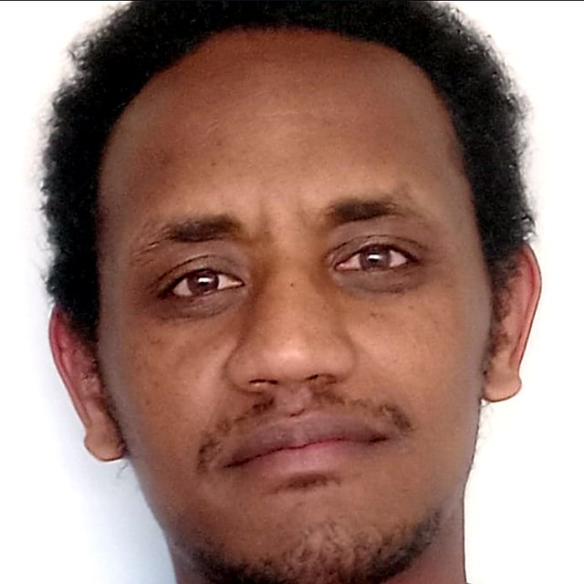

Mulusew Kassa Bitew
PhD · Postdoctoral Research Fellow (MultiOmics) · University of Molise, Italy
Genomics × Adaptation × Machine learning: bridging biology and computation for climate-smart livestock.

Genomics, adaptation and teaching
Researcher and academic with more than 15 years of experience in university teaching, research and supervision across genetics, breeding, biotechnology and agricultural biochemistry. PhD from the University of Molise with an International Doctor Label.
Population & Evolutionary Genomics
Studying how African cattle populations formed and adapted, through population structure, admixture and migration, selection signatures and genome–environment association.
Machine Learning for Demographic Inference
Using ABC-RF (Approximate Bayesian Computation with Random Forest) to reconstruct demographic history, admixture timing and migration from genomic data.
Quantitative Genetics & Breeding
Genomic prediction with BLUP / GBLUP, genotype × environment analysis and breeding applications for crops and livestock.
Research journey
From crop breeding in Ethiopia and the Netherlands to livestock genomics in Italy and at ILRI.
Research & professional experience
Postdoctoral Research Fellow (MultiOmics)
University of Molise, Campobasso, Italy · Oct 2026 – present
Multi-omic adaptive response in ruminants. Livestock genomics, population genetics, adaptive evolution and quantitative analysis, with reproducible R, Python, Bash, Linux and HPC workflows.
Research Fellow
International Livestock Research Institute (ILRI), Addis Ababa, Ethiopia · Nov 2024 – Apr 2025
Genomic diversity and population structure of African cattle; admixture and migration inference; ABC-RF demographic reconstruction; integration of genomic and environmental data to study adaptation and resilience.
Doctoral Researcher
University of Molise, Italy · 2022 – 2026
Population genomics of African cattle; GWAS and selection signatures; demographic history with machine learning; scalable bioinformatics pipelines; genomic regions linked to environmental adaptation.
Lecturer / Researcher
Debre Markos University, Ethiopia · 2014 – 2022
Taught Genetics, Plant Breeding, Biostatistics, Biotechnology and Agricultural Biochemistry; supervised MSc and BSc students; research on crop breeding, genetic diversity and disease resistance.
Lecturer
Mekelle University, Ethiopia · 2010 – 2012
Teaching and research in plant science, genetics and crop production.
Academic training
PhD, Agricultural Technologies and Biotechnologies
University of Molise, Italy · 2022 – May 2026
Thesis: Unscrambling the Genomic History and Adaptive Footprint of African Cattle. Supervisors: Prof. Fabio Pilla and Prof. Gabriele Senczuk. International Doctor Label.
MSc, Plant Breeding and Genetic Resources
Wageningen University & Research, The Netherlands · 2012 – 2014
Phytophthora infestans recognition in potato (SCR74), tomato resistance to Tuta absoluta, plant–pathogen interactions and effector biology.
BSc, Plant Science and Protection
Aksum University, Ethiopia · 2008 – 2010
Skills & methods
Population & evolutionary genomics
Quantitative genetics & breeding
Bioinformatics & genomic data
Software & lab
Programming & computing
Molecular & experimental
Teaching & supervision
Research interests
Spanning genomics, computation and climate-driven agriculture.
Population and evolutionary genomics
Population structure, admixture and demographic history of African cattle.
Environmental adaptation
Genotype–environment interactions, climate resilience and stress responses.
Multi-omics integration
Combining genomic and environmental data to understand adaptive responses in ruminants.
Selection and GWAS
Selection signature detection and genome-wide association for adaptive traits.
Machine learning
ABC-RF for demographic inference, admixture timing and migration.
Sustainable breeding
Bioinformatics and quantitative tools for climate-smart breeding of ruminants.
Multi-omic adaptive response in ruminants
Postdoctoral Research Fellow (MultiOmics) at the University of Molise since October 2026. Contributing livestock genomics, population genetics, adaptive evolution and quantitative analysis to the study of how ruminants respond to their environment, with reproducible R, Python, Bash and HPC workflows and careful biological interpretation of complex genomic evidence.
Selected papers
Talks, awards & training
Conference presentations
- ISAG 2025: ABC-RF admixture timing in African cattle
- ISAG 2023: Population structure of African cattle
Awards and grants
- ISAG Bursary Award · 2023 and 2025
- Africa-UniNet Research Project · 2021–2022
- Principal Investigator, Striga Resistance and Seed Multiplication Project · 2018–2020
Professional training
- Ontario Summer School in Genomics · 2024 (RNA-seq, metagenomics, long-read sequencing, AI tools for genomics)
- Wageningen University genomics training programmes
- ILRI genomics and bioinformatics training programmes
Interactive Applications
Web-based tools for genomic data analysis and visualization, built for researchers and breeding programme managers, plus AMBKidsJoy, an interactive learning hub for children. 0 live
Let's collaborate
Open to collaboration on livestock genomics, adaptation and climate-resilient breeding.
Send a message
Elsewhere
- Email:
- ORCID: 0000-0001-6223-0037
- GitHub: Muler-21
- Facebook: mlo.kmo.btwo
- YouTube: @Edu-Sc21
- TikTok: @mulusew_kb
- Location: Campobasso, Italy